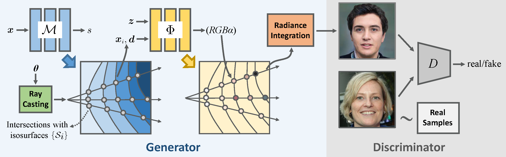

DPF-Net: Combining Explicit Shape Priors in Deformable Primitive Field for Unsupervised Structural Reconstruction of 3D Objects
ICCV 2023
- Qingyao Shuai 1
- Chi Zhang 2
- Kaizhi Yang 3
- Xuejin Chen 2
- University of Science and Technology of China

Abstract
Unsupervised methods for reconstructing structures face significant challenges in capturing the geometric details with consistent structures among diverse shapes of the same category. To address this issue, we present a novel unsupervised structural reconstruction method, named DPF-Net, based on a new Deformable Primitive Field (DPF) representation, which allows for high-quality shape reconstruction using parameterized geometric primitives. We design a two-stage shape reconstruction pipeline which consists of a primitive generation module and a primitive deformation module to approximate the target shape of each part progressively. The primitive generation module estimates the explicit orientation, position, and size parameters of parameterized geometric primitives, while the primitive deformation module predicts a dense deformation field based on a parameterized primitive field to recover shape details. The strong shape prior encoded in parameterized geometric primitives enables our DPF-Net to extract high-level structures and recover fine-grained shape details consistently. The experimental results on three categories of objects in diverse shapes demonstrate the effectiveness and generalization ability of our DPF-Net on structural reconstruction and shape segmentation.
Video
Overview

Overview of the GRAM method. The generator G consists of a manifold predictor M and a radiance generator Φ. M predicts multiple isosurfaces which define the input domain of Φ. The intersections between camera rays and the isosurfaces are sent to Φ for color and occupancy prediction. Images are then generated by compositing the color of the points along the ray.
Generation Results
GRAM is able to generate high-quality images with fine details. Moreover, it allows an explicit control of camera viewpoint and achieves highly consistent results across different views. It even maintains strong visual 3D consistency for very thin structures such as bangs of hair, eyeglass, and whiskers of cat.
GRAM achieves the best visual quality with realistic details and remarkable 3D consistency on multiple datasets comparing with previous 3D-aware image generation methods.
Manifolds Visualization
GRAM constrains point sampling and radiance field learning on 2D manifolds, embodied as a set of implicit surfaces. These implicit surfaces are shared for the trained object category, jointly learned with GAN training, and fixed at inference time.
3D Geometry Visualization
Although GRAM confines the input domain of the radiance field on 2D manifolds, we can still extract proxy 3D shapes of the generated objects using the volume-based marching cubes algorithm. It can be observed that GRAM produces high-quality geometry with detailed structures well depicted, which is the key to achieve strong visual 3D consistency across different views.
Responsible AI Considerations
The goal of this paper is to study generative modelling of the 3D objects from 2D images, and to provide a method for generating multi-view images of non-existing, virtual objects. It is not intended to manipulate existing images nor to create content that is used to mislead or deceive. This method does not have understanding and control of the generated content. Thus, adding targeted facial expressions or mouth movements is out of the scope of this work. However, the method, like all other related AI image generation techniques, could still potentially be misused for impersonating humans. Currently, the images generated by this method contain visual artifacts, unnatural texture patterns, and other unpredictable failures that can be spotted by humans and fake image detection algorithms. We also plan to investigate applying this technology for advancing 3D- and video-based forgery detection.
Availability of Software
Per concerns about misuse of this method, the code is available for use under a research-only license.
Citation
@inproceedings{shuai2023dpfnet,
title={DPF-Net: Combining Explicit Shape Priors in Deformable Primitive Field for Unsupervised Structural Reconstruction of 3D Objects},
author={Qingyao, Shuai and Chi, Zhang and Kaizhi, Yang and Xuejin, Chen},
booktitle={IEEE/CVF Conference on International Conference on Computer Vision (ICCV)},
year={2023}
}